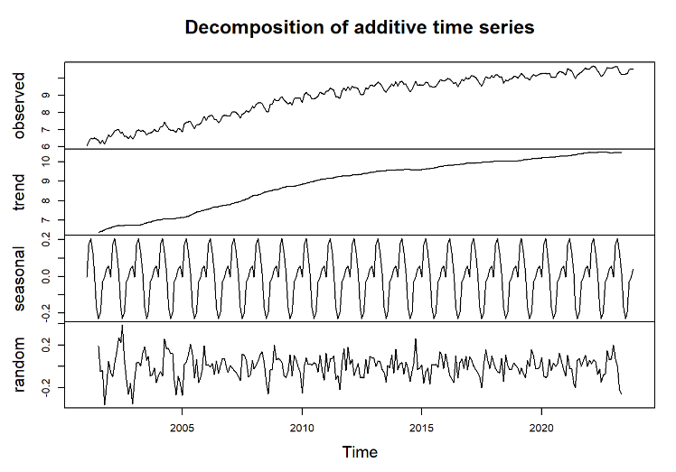
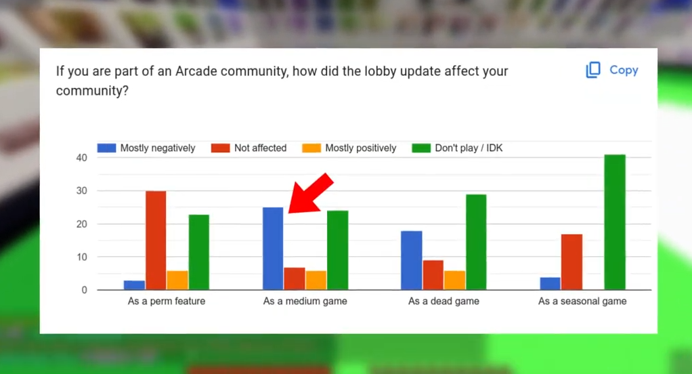
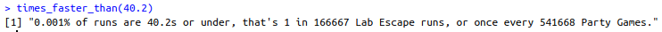

Prévoir la production d'électricité éolienne en France
Pour mieux comprendre la transition énergétique en France, j'ai analysé en binôme la production d'électricité éolienne en France entre 2001 et 2023 pour prévoir la production en 2024.
Comme l'augmentation de la production n'était pas linéaire, on a ramené les données à une échelle logarithmique pour prendre en compte l'augmentation exponentielle. On a ensuite décomposé les données en tendance, variations saisonnières, et résidus, pour voir précisément les variations au fil d'une année, ce qui nous a donné le graphique ci-dessous.
Enfin, on a comparé plusieurs méthodes de prévisions différentes: une simple régression en utilisant la tendance et en rajoutant les variations saisonnières (représentée en violet à droite), le modèle ARMA qui prend en compte les moyennes des années 2022 et 2023 (représentée en rouge), et la méthode Holt-Winters (en bleu) qui est faite pour prendre en compte la saisonnalité.
Le résultat est une comparaison des différentes méthodes que l'on peut utiliser pour prévoir des données en fonction d'un dataset avec des variations saisonnières.
Comprendre l'impact d'une mise à jour: analyse des retours des joueurs
Pour mieux comprendre l'impact d'une mise à jour d'un serveur Minecraft, j'ai lancé une enquête visant à comprendre comment les communautés de ce serveur ont réagi à la mise à jour controversée. Un an plus tard, je voulais savoir si les avis avaient changé.
J'ai crée un formulaire pour à comprendre l'évolution des opinions entre 2023 et 2024, avec une douzaine de questions pour mesurer l'impact de la mise à jour sur les communautés. Par exemple, j'ai demandé leur avis sur la mise à jour à sa sortie, puis un an plus tard. Le formulaire comprenait aussi des questions ouvertes, pour avoir une idée de ce que les joueurs aimeraient voir sur le serveur.
Un défi particulier a été de récolter des réponses assez variées, couvrant à la fois les grandes communautés ainsi que les petites (comme celles des mini-jeux moins connus). Il fallait aussi équilibrer les avis des joueurs expérimentés et des nouveaux joueurs. N'ayant pas accès à toutes les communautés, j'ai sollicité certains représentants (ou joueurs plus influents) pour transmettre le questionnaire aux joueurs concernés.
Enfin, pour résumer les 60 réponses des communautés variées, j'ai produit une vidéo YouTube pour exposer les résultats de l'enquête: ce qui a été apprécié, ce qui a moins bien fonctionné, et des suggestions pour le futur.
Peut-on battre un record sans chance?
Lab Escape est un mini-jeu de Party Games sur Hypixel où il faut s'échapper d'un laboratoire le plus vite possible en détruisant des blocs dont la distribution est aléatoire. Cependant, la configuration des blocs a une grande influence sur le temps que cela prend. Mais à quel point la chance joue-t-elle un rôle?
Pour répondre à cette question, j'ai simulé grâce à Python un million de parties de Lab Escape. Chaque bloc prend un temps différent à détruire, par exemple, une partie avec plus de terre que de bois se terminera plus vite, tandis qu'une partie avec plus de bois que de terre sera plus lente à finir. J'ai donc déduit le temps minimum possible pour chaque simulation. J'ai ensuite représenté ces données sous R, ce qui a donné cette distribution en cloche. Pour espérer battre le record, il faut une configuration de blocs permettant un temps représenté ici par le point rouge... soit un point à plus de 4.5 écarts-types.
Pour avoir un ordre de grandeur, j'ai écrit une fonction R pour calculer à quelle fréquence on peut espérer une telle configuration:
C'est-à-dire deux fois sur un million de parties. Cependant, avoir cette chance ne suffit pas, car il faut ensuite une exécution quasi-parfaite. De même, on ne peut pas espérér battre le record si on a trop de mauvais blocs, même avec une exécution parfaite.